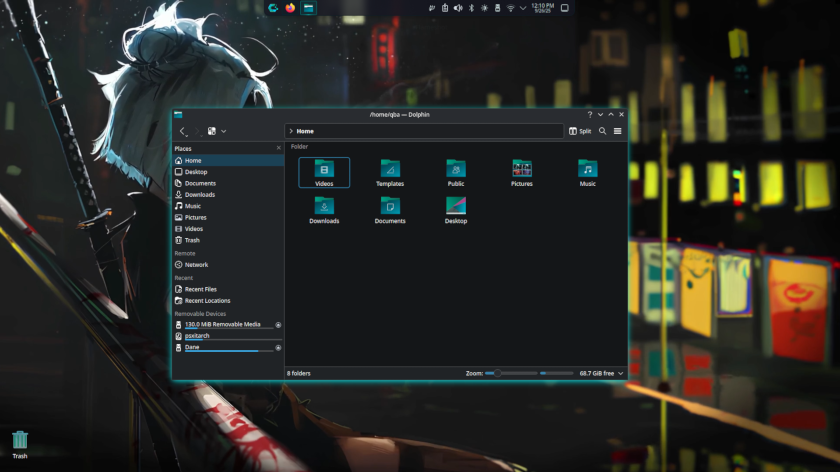

CachyOS Final Fantasy — édition « yakuza »
CachyOS est une distribution basée sur Arch orientée performance et gaming. Cette édition thématique « Final Fantasy » (ヤクザ) est portée sur PS4 par Elokuba, membre du forum ps4linux.com
Vous pouvez poster vos questions sur le forum sujet original Attention il y a plusieurs versions, sur le forum. Prenez bien la dernière, proposée ici.
Identifiants
Login : qba — mot de passe : loki (tout en minuscules).
Configuration recommandée après installation
Langue / clavier (sddm & locale) :
sudo locale-gen
sudo localectl set-locale LANG=fr_FR.UTF-8Tester une configuration zram (optionnel) :
sudo nano /usr/lib/systemd/zram-generator.conf
# test de charge
sudo pacman -S stress-ng
stress-ng --vm 6 --vm-bytes 90% --timeout 60sDésactiver / réactiver un fichier swap (optionnel) :
# désactiver
sudo swapoff -v /swapfile
sudo rm /swapfile
# réactiver (X = taille en Go)
sudo fallocate -l XG /swapfile
sudo chmod 600 /swapfile
sudo mkswap /swapfile
sudo swapon /swapfile
sudo nano /etc/fstab
# ajouter la ligne :
# /swapfile none swap sw,pri=10 0 0Téléchargements
| Contenu | Lien | Note |
|---|---|---|
| Distro (v2, la plus récente) | Mega.nz / MegaUp | Testée en interne, fonctionnelle |
| Bootargs | Mega.nz | Indispensable au démarrage |
| BzImage (avec zram, Belize) | Mega.nz | À décompresser |
| Distro finale (« final fantasy-final ») | Mega.nz | Dernière itération connue de l'auteur |
| Fichiers complémentaires (sans bootargs, Aeolia/Belize) | Mega.nz (dossier) | — |
| Initramfs (HDD/SSD interne) | MediaFire | — |
| Ancienne version | Mega.nz | Si le noyau ne gère pas zram et boot trop lentement, supprimer /usr/lib/systemd/zram-generator.conf |
Vidéos
